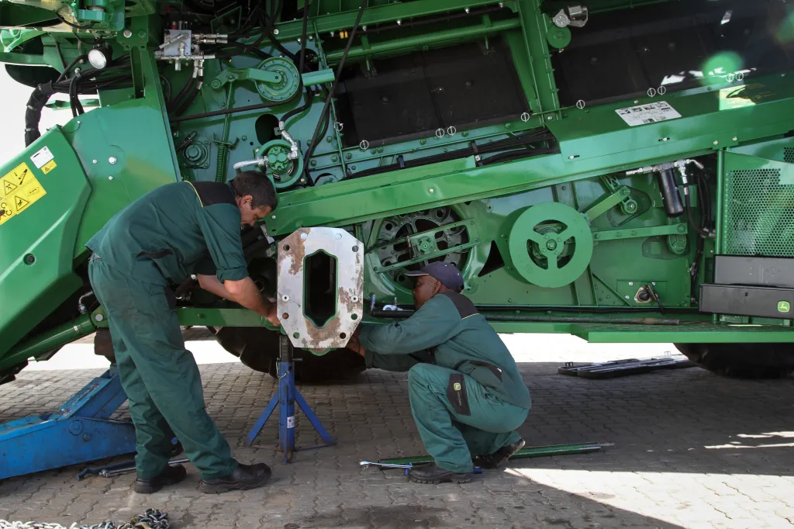

The Good Guys
There are a few outstanding examples of companies that have taken inititive to support the Right to Repair movement. One of the most notable is iFixit, a company that provides repair guides and parts for a wide range of devices. iFixit has been a strong advocate for the Right to Repair movement, and has worked to raise awareness about the importance of repairability in consumer electronics.
Another example is Framework, a company that makes modular laptops that can be easity upgraded and repaired. Their approch to consumer laptops provideds more power and flexibility to the user more akin to a desktop computer. Their design choices are a breadth of fresh air in a world where most laptops are designed to be disposable and unserviceable. This hopefully will create a ripple effect in the industry, encouraging other manufacturers to follow suit.
The Bad Guys
John Deere is a company that has been criticized for its lack of support for the Right to Repair movement. The company has been accused of using software locks and other measures to prevent farmers from repairing their own equipment. This has led to a growing backlash against the company, as many farmers feel that they should have the right to repair their own equipment without having to rely on expensive dealer services. In fact this year there has been a lawsuit filed against John Deere by the Federal Trade Comission, accusin them of creating monopolisitc and anti-competitive repair and dealer service system that puts farmers and independent repair professionals at an unfair disadvantage.

Another example is Apple, a company that has been criticized for its lack of support for the Right to Repair movement. Apple has been accused of using proprietary screws and other measures to prevent consumers from repairing their own devices. This has led to a growing backlash against the company, as many consumers feel that they should have the right to repair their own devices without having to rely on expensive dealer services.

{kind=link}
{kind=link}
{kind=link}
{kind=link}
{kind=link}